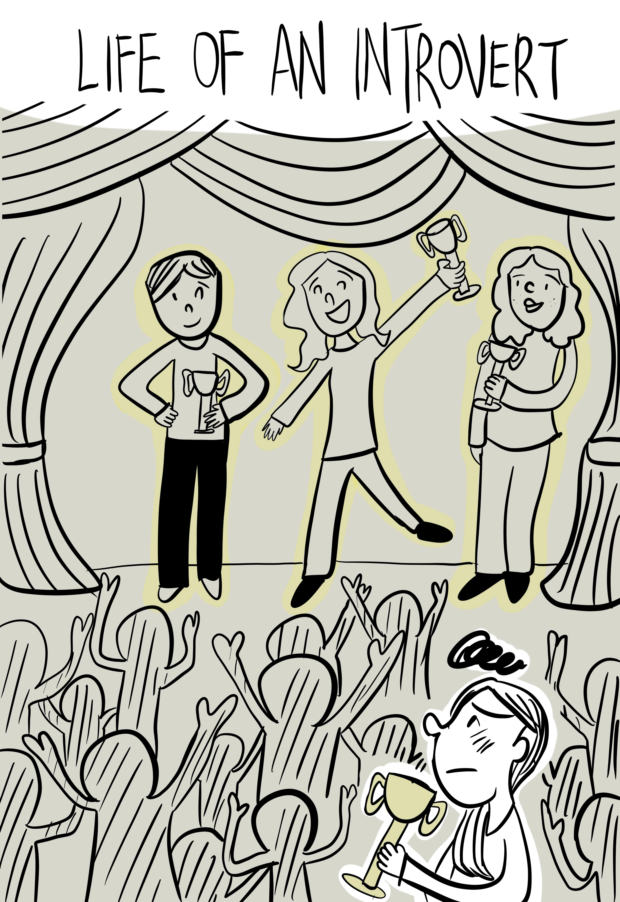
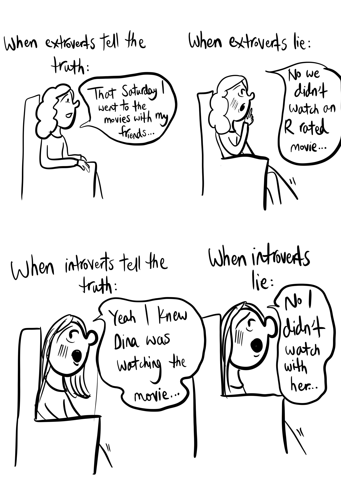
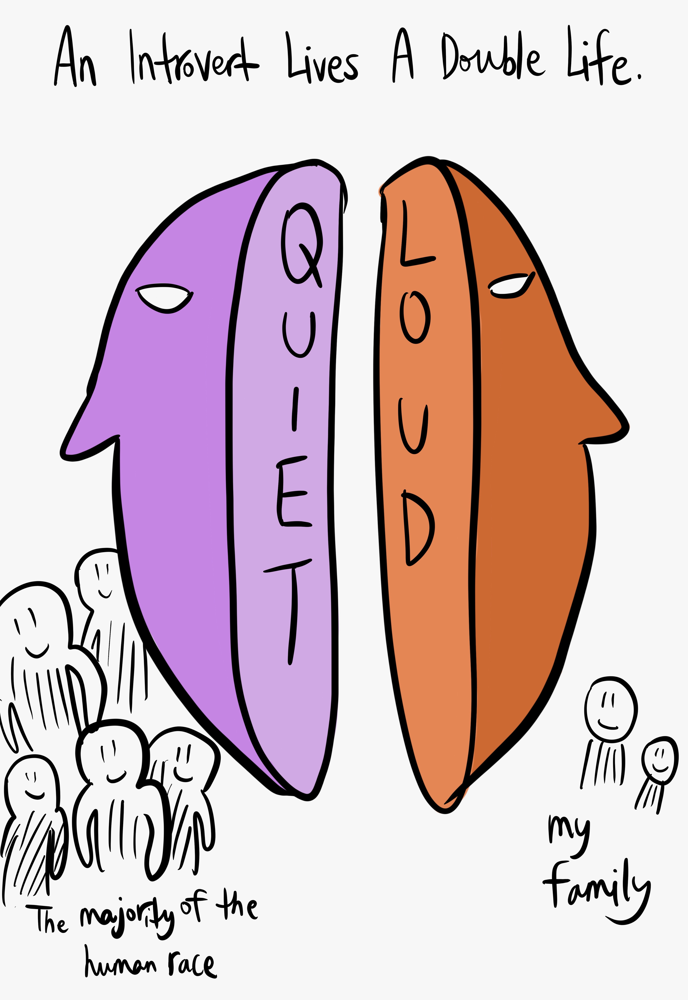
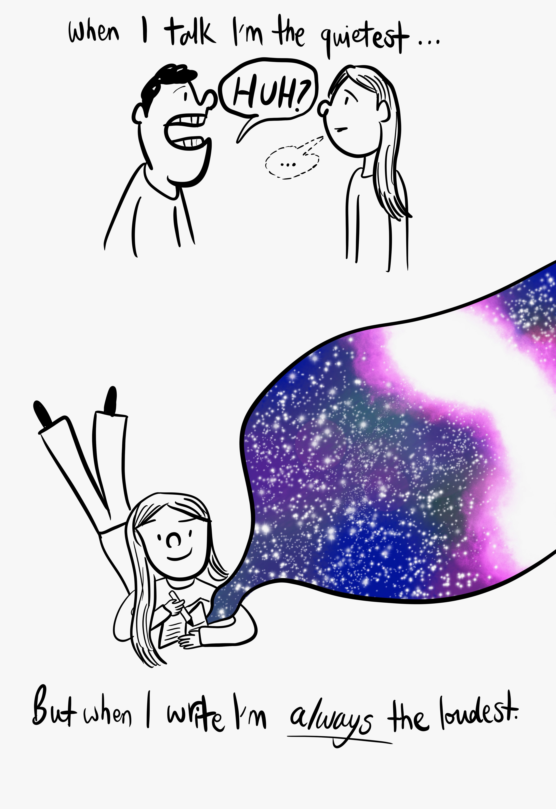
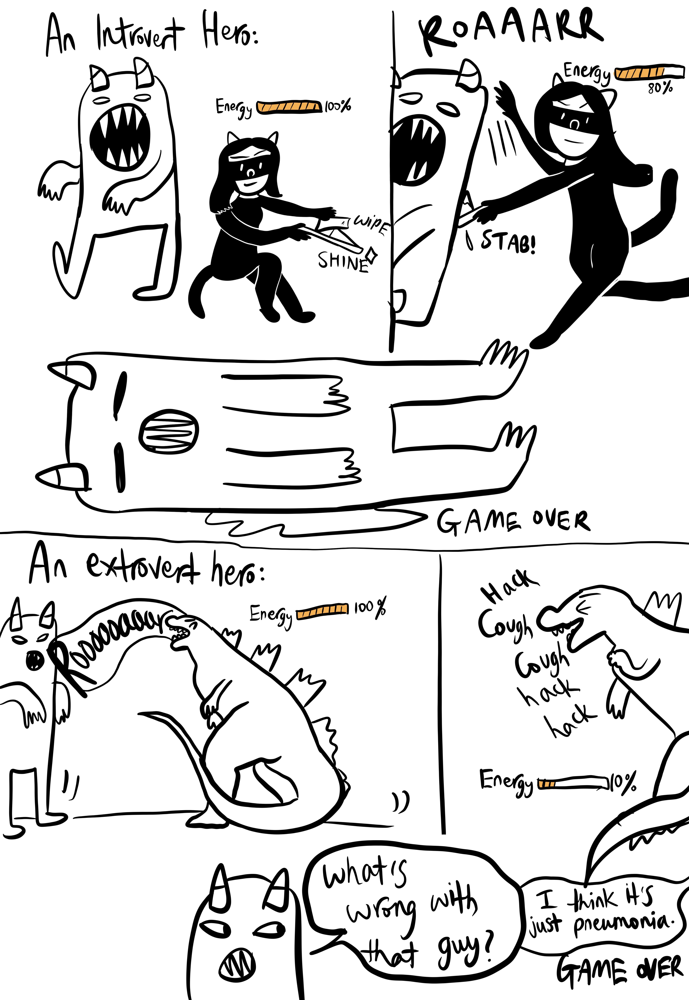

Being An Introvert
A three-comic-strip collection about introversion


The ironic dilemma: extroverts are easy to read when lying, while introverts look so nervous even when telling the truth that no one can tell the difference


